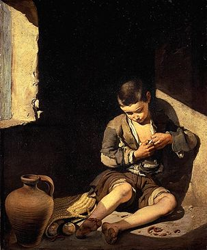

Bartolomé Esteban Murillo
1618-1682
Joven mendigo
Hacia 1650
Lienzo
A 1,34 m; L 1 m
INV 933
Al margen de su abundante producción religiosa, Murillo nos dejó con este niño que se despioja, representado en tamaño natural, una de las más penetrantes visiones de la infancia. De inspiración caravaggiesca, el cuadro describe sin complacencia a un joven sevillano con los pies sucios y con vestimentas andrajosas en un lugar de rústica desnudez. Pero la dificultad reside en el efecto del rayo de sol impreso en el material pictórico con un cuidadoso naturalismo, que llamará la atención de los pintores franceses del XIX que buscaban la novedad, como Manet.